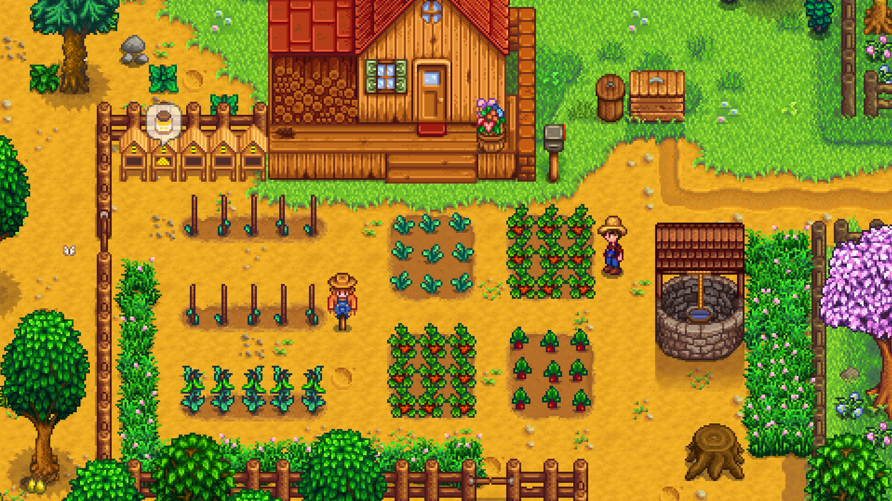
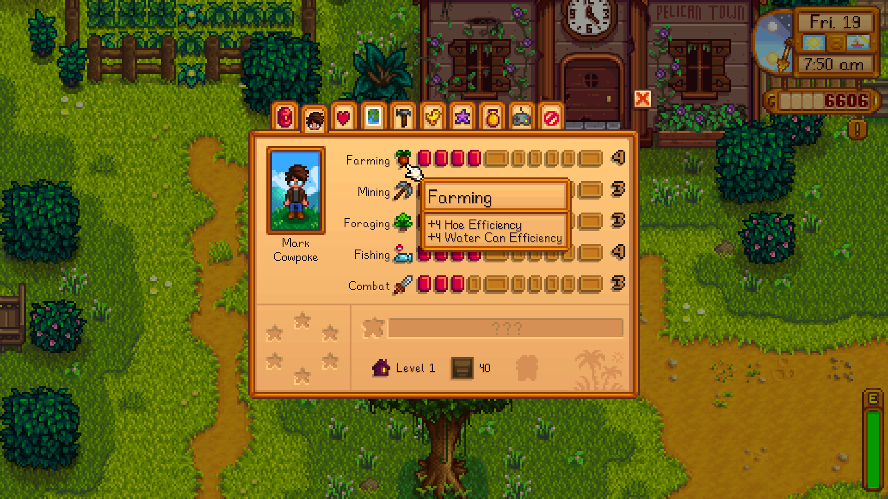
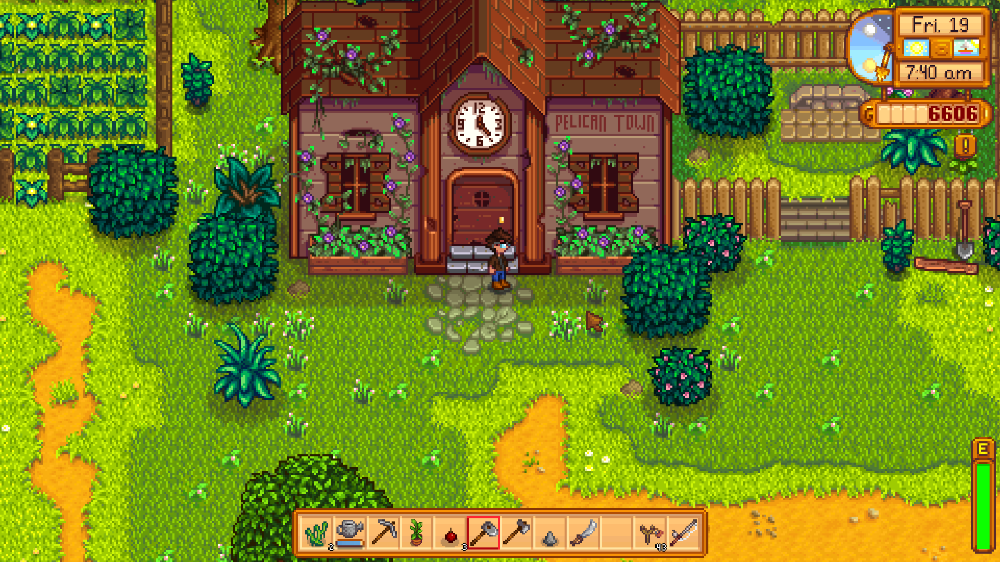
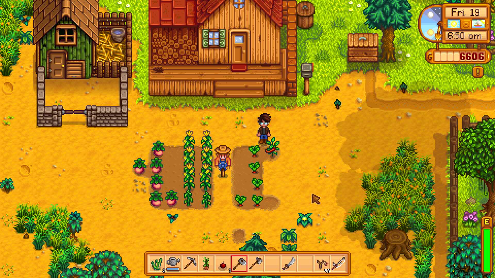
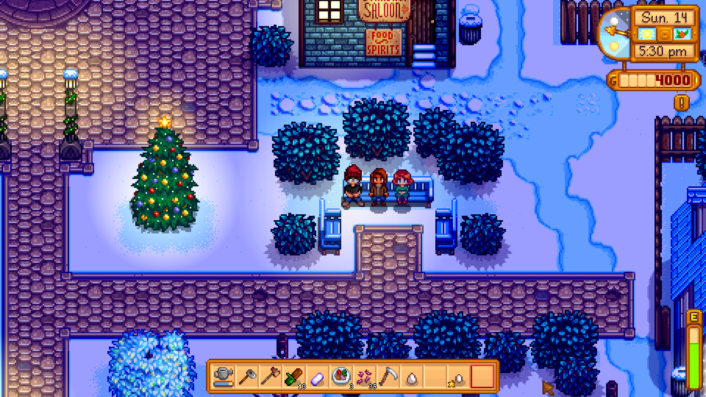

Autonomy
You set your own goals and pace; almost nothing is forced. Play it as a farm, a social game, or a completionist puzzle.
Benchmark · Deep Dive
The modern gold standard for the cozy farming-life sim. A twelve-dimension teardown of why it works — read through The Benchmark Lens — so we can rebuild the feeling with historical-Manipur content.

One-person proof
Eric "ConcernedApe" Barone made almost all of it — art, code, music, design — over ~4 years, inspired by Harvest Moon and EarthBound. It is the clearest evidence that a small team can ship a genre-defining life-sim if the systems cohere.
Platform note
Stardew is PC-first, then ported to consoles and mobile — a story with real costs (mobile update lag, no multiplayer, touch fighting its precision minigames). See Cross-Platform Lessons for what to carry and what to avoid.
With over 460,000 reviews at "Overwhelmingly Positive," Stardew is the most-scrutinised game we benchmark, so its reviews are a goldmine of what to do and what to avoid. The most striking finding: its greatest strength and its most common complaint are the same mechanic. The ticking day and seasonal timing create the famous "one more day" pull — and, for many, a low-grade anxiety that undercuts the cozy promise. We mine both sides.
Emulate
Avoid
The core tension we must resolve
Stardew proves that the very engine of engagement — a ticking clock and seasonal timing — is also the engine of stress. The "one more day" compulsion and the FOMO are two faces of one coin. Our task is to keep the compulsion of overlapping goals while defusing the punishment: no year-long lockouts, no can't-pause pressure, no arbitrary walls. Cozy-first means the clock invites, never threatens.
| Community friction | Our design rule |
|---|---|
| Short day, no pause, event rush | Generous time; let players linger; no penalty for stopping to enjoy the world. |
| Seasonal FOMO, year-long lockouts | Missed content recurs soon or forgives; no hard annual gates on essentials. |
| Closed-shop and festival lockouts | Never wall off core actions on fixed days without an alternative. |
| Punishing early stamina | Raise the early-game energy floor so basic work is always possible. |
| Friendship decay and birthday penalties | Relationships do not rot from neglect; forgetting is never punished. |
| Map-wide NPC hunting to gift | Make finding people easy — schedule hints and location cues. |
| Hated fishing, mandatory mines/combat | Keep skill minigames optional and forgiving; never force off-genre systems. |
| Respawning debris and inventory chores | Minimise pure-tedium upkeep; automate or remove busywork. |
| Forced, overlong cutscenes | Keep story beats tight and skippable. |
You inherit your late grandfather's overgrown farm and escape a soul-deadening corporate job (Joja) for a slower, self-directed rural life. The fantasy is escape + self-determination + belonging: trade the cubicle for soil you own, a routine you set, and a town that slowly becomes yours.
Verdict · Adapt
Our fantasy is close but re-rooted: not "escape capitalism" but "belong to a living historical Meitei valley." Keep the reclaim-a-life spine; change the thing being escaped and the world being joined.
A day runs 6 AM–2 AM. You plan against your energy and goals, act (water, harvest, mine, fish, socialise), earn (crops, ore, friendship, money), and reinvest (tools, seeds, buildings, gifts). Seasons of 28 days gate what's possible; festivals punctuate the rhythm; multi-year goals pull the whole thing forward.
Verdict · Emulate
The short-day, multi-clock structure is the heart of the genre. Keep it; retune the clocks to the Meitei calendar and monsoon paddy cycle.
The joy is variety under one roof — five skill tracks and several distinct "games" that feed each other.
| System | What it is | Feeds into |
|---|---|---|
| Farming | Till, plant, water daily, harvest within a season; livestock & artisan goods | Money, cooking, bundles, gifts |
| Mining & combat | Descend the mines for ore; light RPG combat vs. monsters; risk/reward | Tool upgrades, crafting, rings/gear |
| Fishing | Timing mini-game; varies by location, weather, season | Income, bundles, recipes |
| Foraging | Seasonal wild goods across the map | Cooking, bundles, gifts |
| Crafting & automation | Sprinklers, kegs, preserves jars, chests | Removes daily chores, scales output |
| Social | Talk, gift (twice/week), heart events, marriage | Relationships, help on farm, story |
Verdict · Adapt / partly Reject
Keep the multi-activity variety and automation curve. Adapt farming to real paddy/terrace methods; adapt "fishing/foraging" to Loktak and forest gathering. The dungeon-crawl combat is likely rejected or radically rethought — bolt-on RPG combat would fight our tone and era.
Progression is multi-vector so it never stalls: skills (5 tracks, professions at levels 5 & 10) → tools (copper→iridium upgrades that water/break more per action) → automation (sprinklers free your mornings) → infrastructure (barns, greenhouse, sheds) → completion (bundles, museum, perfection). Early mastery removes chores; late mastery is optimisation and collection.
Verdict · Emulate
The "each upgrade buys back time" curve is gold. Reproduce it with period-plausible tools and household growth rather than iridium sci-fi metals.
Stardew is a textbook of Self-Determination Theory plus soft compulsion.
You set your own goals and pace; almost nothing is forced. Play it as a farm, a social game, or a completionist puzzle.
Constant small wins and visible mastery — a tidier farm, a filled bundle, an optimised day.
Friendships, romance, and family give belonging; the town reacts to you.
Weather, geode contents, fish, random events — anticipation without slot-machine cruelty.
No real fail state; passing out costs little. Safety is what makes it a "comfort game."
Something always finishes tomorrow — a crop, a heart, a season — so you keep going.
Verdict · Emulate
This is the transferable core. Autonomy, gentle competence, real relatedness, low stakes, and overlapping timers should be non-negotiable design pillars for our game.
The game is relaxing because it is scarce. Time (a finite day), energy (finite actions), seasons (crops die at season's end), and money (everything competes for it) turn each morning into a small optimisation. Remove any one and the daily puzzle collapses.
Verdict · Emulate
Keep the time+energy+season triangle. Tie energy to food (chak, ngari) and the season clock to the monsoon so scarcity feels historically true, not arbitrary.
Roughly 30+ named villagers, each with a routine, backstory, and heart events that unlock as friendship grows — revealing depression (Shane), poverty (Penny/Pam), aspiration (Sebastian), and more. Twelve are marriage candidates; a spouse moves in, helps, and you can have children. Gifting (loved/hated preferences) and festivals are the connective tissue.
Verdict · Emulate the structure, Adapt the content
Keep hearts, heart-events, gifting, and marriage-as-progression. Rebuild every character, custom, and gift from Meitei social reality — courtship, kinship, and etiquette of the era must be correct.
The story is ambient: Grandpa's letter frames the fantasy; after two in-game years his spirit evaluates your farm, friendships, and wealth (nothing → golden statue). The spine choice is Community Center vs. Joja — restore the town by completing bundles, or pay the corporation to gut it. Content keeps opening: greenhouse, desert, Ginger Island, perfection tracker, multiplayer. There is no forced ending; goals shift to expansion, collection, and relationships.
Community Center
Cooperative, seasonal bundles restore the town — tradition, effort, togetherness.
Joja route
Pay to skip — fast, transactional, and the town's heart becomes a warehouse.
The lesson
A single value-laden choice makes the whole world feel like it responds to who you are.
Verdict · Adapt
Keep ambient storytelling, a framing goal, and content that scales without a wall. Replace Joja/Community Center with a period-true value tension (e.g. individual gain vs. Lallup communal duty), grounded in research, never anachronistic corporate satire.
Handcrafted SNES-era pixel art with a unified aesthetic; a palette that shifts by season, weather, and time of day; expressive manga-influenced character portraits; and a clean retro UI that stays out of the way. The music is a chiptune/instrumental hybrid with distinct seasonal themes and rainy/sunny variants that track the world state.
| Element | Choice | Effect |
|---|---|---|
| Palette | Season-shifting; pastel spring → warm autumn → cool winter | The screen tells you the time of year at a glance |
| Portraits | Large, expressive, consistent with sprites | NPCs read as individuals with feelings |
| UI | Retro pixel boxes, colour-coded, minimal | Readable, unobtrusive, nostalgic |
| Music | Seasonal themes + weather/day variants | Mood and immersion without fatigue |
Verdict · Adapt
Emulate the discipline — a unified style, season-driven palette, expressive portraits, mood-led music. The specific look must be ours (see Art & Art Style); pixel-art is optional, not required.
A short intro, a helpful early letter drip, and systems introduced gradually rather than up front. It is forgiving (soft failure), pausable, and playable in short sessions — which is a big part of its broad reach.
Verdict · Emulate
Teach by drip, fail softly, respect short sessions. Accessibility is what let Stardew reach millions.
Players call it a "comfort game" and "a hug in video-game form." The emotional promise is safety, gentle progress, and belonging — a beautiful, kind world where effort is always rewarded and nothing punishes you for living slowly.
Verdict · Emulate
Protect the cozy contract. Authenticity and difficulty must never turn our game stressful or punishing; reverence for Meitei life can be the source of warmth, not friction.
| Dimension | Strength | Verdict for our game |
|---|---|---|
| Premise & fantasy | Very high | Adapt — belong to the valley, don't escape a job |
| Core loop & pacing | Very high | Emulate — retune clocks to Meitei calendar |
| Systems & mechanics | High | Adapt farming; likely reject dungeon combat |
| Progression | Very high | Emulate — "upgrades buy back time" |
| Motivation model | Very high | Emulate — the SDT core is our pillar set |
| Economy & tension | High | Emulate time+energy+season triangle |
| Characters | Very high | Emulate structure, rebuild all content |
| Narrative & scaling | High | Adapt — period-true value tension |
| Art & audio | High | Adapt discipline; look is ours |
| Onboarding | High | Emulate drip-teaching & soft failure |
| Emotional design | Very high | Emulate the cozy contract |
Reference shots live in docs/assets/benchmarking/stardew-valley/ (raw files start in
_intake/), grouped below by the systems they illustrate. Add more by dropping files there and
adding another <figure> with an
<img src="../assets/benchmarking/stardew-valley/…">. See
Asset Management.















The one lesson
Stardew is beloved because interlocking systems under gentle scarcity make each short day a satisfying, safe choice — and the town rewards your curiosity. Match that machine first; historical-Manipur specificity is what makes it ours.
The Benchmark Lens · Japanese Rural Life → · Back to Benchmarking